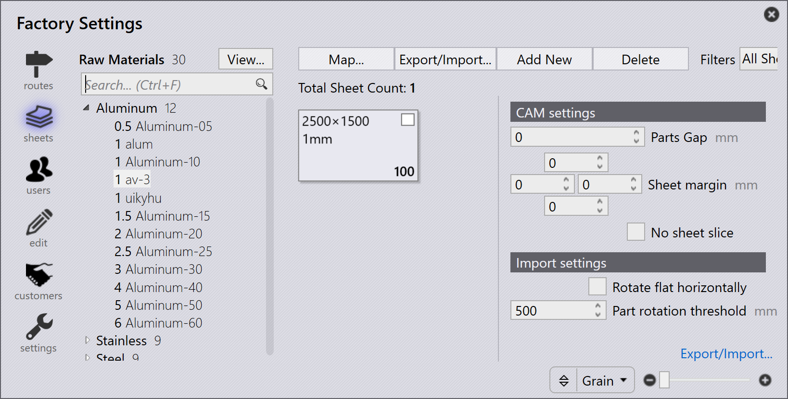
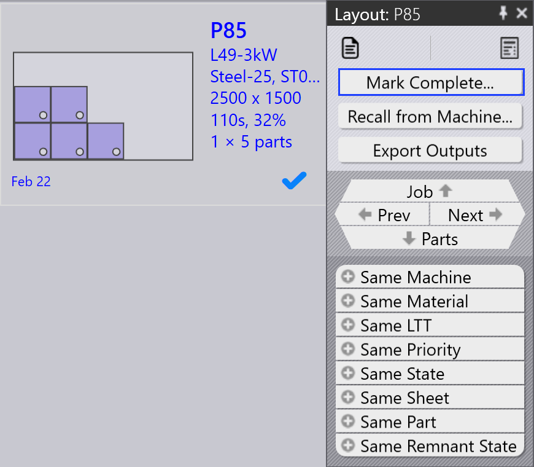

Flujo de trabajo
TruSmartCAM es un sistema de ejecución de manufactura que gestiona y optimiza los procesos de fabricación de chapa metálica. Un flujo de trabajo en TruSmartCAM consiste en una serie de pasos que usted sigue para completar una tarea o proceso específico. Puede personalizar el flujo de trabajo para adaptarse a diferentes procesos de fabricación y ajustarlo a sus necesidades específicas. El flujo de trabajo en TruSmartCAM normalmente incluye los siguientes pasos:
1. Configurar el sistema
Configure TruSmartCAM para que coincida con su entorno de fabricación. Este paso fundamental incluye definir máquinas con sus capacidades y parámetros, agregar materiales disponibles y rangos de espesor, configurar bibliotecas de herramientas con punzones y matrices, crear hojas de configuración para diferentes configuraciones de máquinas, y gestionar cuentas de usuario con los permisos apropiados. Un sistema correctamente configurado garantiza un procesamiento preciso y previene errores en etapas posteriores. Esta configuración normalmente se realiza una vez durante la implementación inicial, con actualizaciones periódicas a medida que su fábrica evoluciona.
Para más información, consulte Add/Remove machine, Material, Sheets, Setup tooling, y Configure users.

2. Agregar piezas a la biblioteca
Importe piezas CAD 2D o 3D a la biblioteca de piezas utilizando formatos compatibles como archivos DXF, DWG o STEP. Durante la importación, TruSmartCAM analiza automáticamente la geometría de la pieza, valida la fabricabilidad, asigna la tecnología de chapa metálica requerida (láser, punzonado o combinación), y genera miniaturas de vista previa. Las piezas importadas aparecen como fichas en la vista de biblioteca, donde los iconos codificados por colores indican el estado de la pieza, el tipo de tecnología, los requisitos de material y cualquier problema detectado. Este sistema visual permite una evaluación rápida de la preparación de la pieza de un vistazo.
Para más información, consulte Library.

3. Verificar piezas y herramientas
Revise cada pieza importada en busca de posibles problemas de producción. Verifique que la geometría de la pieza sea válida y fabricable, las asignaciones de herramientas sean correctas y estén disponibles, las selecciones de material y espesor coincidan con el inventario, y las secuencias de plegado estén correctamente definidas para piezas conformadas. Si se detectan problemas, abra la pieza en TecZone para modificar la geometría, reasignar u optimizar herramientas, ajustar parámetros de procesamiento o corregir especificaciones de material. Resolver problemas en esta etapa previene retrasos en la producción y reduce el desperdicio durante la fabricación.
Para más información, consulte Part state y Tooling status.

4. Organizar piezas en trabajos
Agrupe las piezas validadas en trabajos basándose en los requisitos de producción. Un trabajo representa una unidad de producción lógica que puede incluir piezas de un único pedido de cliente, piezas que comparten materiales y espesor comunes, piezas con plazos de entrega similares, o una combinación basada en su estrategia de producción. Los trabajos proporcionan un contenedor para la planificación, permiten el procesamiento por lotes de piezas relacionadas, permiten una utilización eficiente del material mediante el anidamiento, y simplifican el seguimiento y la generación de informes. Los trabajos se pueden crear manualmente seleccionando piezas, o automáticamente basándose en reglas y filtros predefinidos.
Para más información, consulte Jobs.

5. Planificar trabajos en máquinas de producción
Una vez que se crea un trabajo, asígnelo a una máquina de producción apropiada. Considere las capacidades de la máquina, incluidas las tecnologías compatibles (láser, punzonado, torreta), la capacidad de material y espesor, las herramientas disponibles y la carga de trabajo actual. Si existen múltiples máquinas adecuadas, seleccione en función de la prioridad de producción, la disponibilidad de la máquina, los requisitos de configuración o la optimización de costos. La asignación puede ser manual para mayor flexibilidad o automática basándose en reglas preconfiguradas y algoritmos de programación de máquinas.
Para más información, consulte Plan job.

6. Liberar NC para trabajos
En esta etapa, se generan los diseños de corte. Aún puede editar diseños y agregar tecnologías de corte al diseño utilizando TecZone. Después, exporte la salida NC y transfiérala al controlador de la máquina o a una ubicación de red designada. El trabajo queda entonces bloqueado para evitar modificaciones adicionales, y su estado se actualiza a "Liberado" para el seguimiento de producción.
Para más información, consulte Send/Recall NC.

7. Completar la producción y finalizar trabajos
Ejecute el trabajo liberado en la máquina asignada. Durante la producción, el operador de la máquina sigue el programa NC, verifica la calidad de la pieza durante el corte, gestiona la carga y descarga del material, y aborda cualquier alarma o problema de la máquina. Después de que la producción haya finalizado, marque piezas individuales o el trabajo completo como completado en TruSmartCAM. Este paso final actualiza los registros de inventario, registra el tiempo de producción real y el uso de material, archiva los datos del trabajo para informes y análisis, y completa el ciclo del flujo de trabajo.
Para más información, consulte Mark complete.
